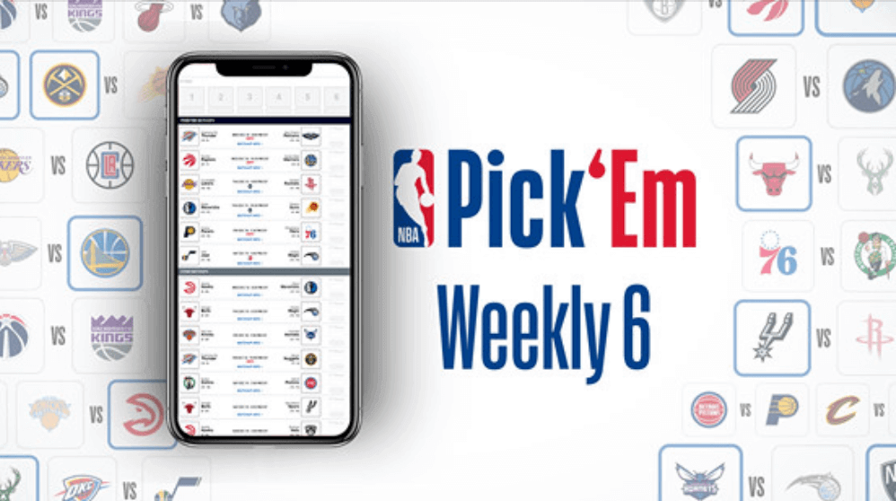
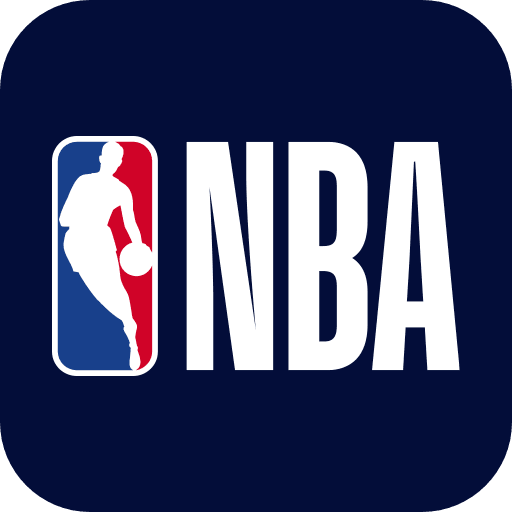
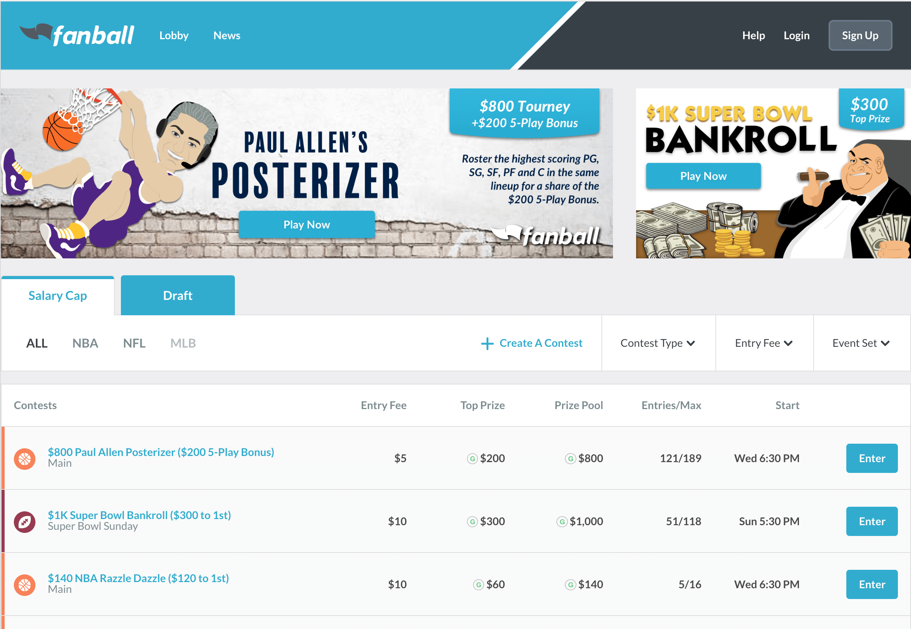
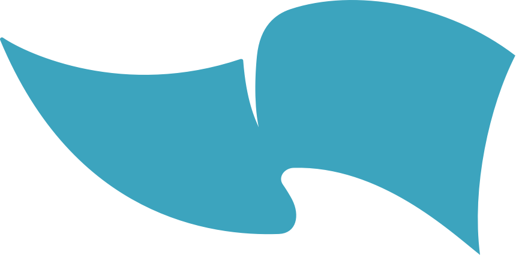

Work + Life
Strategic. Collaborative. Creative.
These words summarize my work style. I care about my teammates and I care about code. I am a huge fan of collaboration, problem solving, and being immersed in the new and the complex.
Technologies
I'm constantly learning. At the moment, these are the technologies I have spent most time with:
- JavaScript
- ReactJS
- Redux
- Apollo GraphQL
- RESTful APIs
- Node.js
- CSS
- Sass
- Styled Components
- Software Testing
My Work
SportsHub Games Network
(Feb 2018 - Present)


NBA Pick'Em
Working on NBA projects, I was part of a remote agile team.
On a fast-moving team, I contributed to a suite of 6 daily sports games for the NBA.
I wrote features and debugged code across multiple browsers.


Fanball
I was a front-end-leaning full-stack junior developer on Fanball, a daily fantasy sports web app. I wrote full features using React, Redux, Apollo GraphQl, and with Styled Components. I collaborated with a diverse team of engineers, and helped maintain code quality through software testing.
Code Snippets and Personal Projects
#100DaysOfCode
Follow me on Twitter to see updates on my hour of code per day for 100 days!